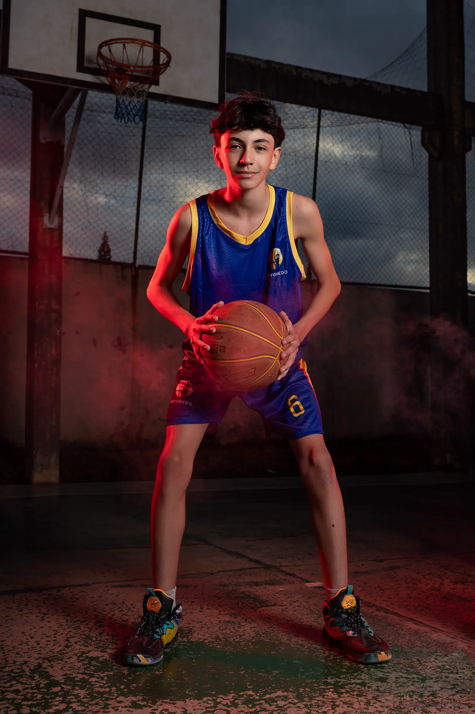
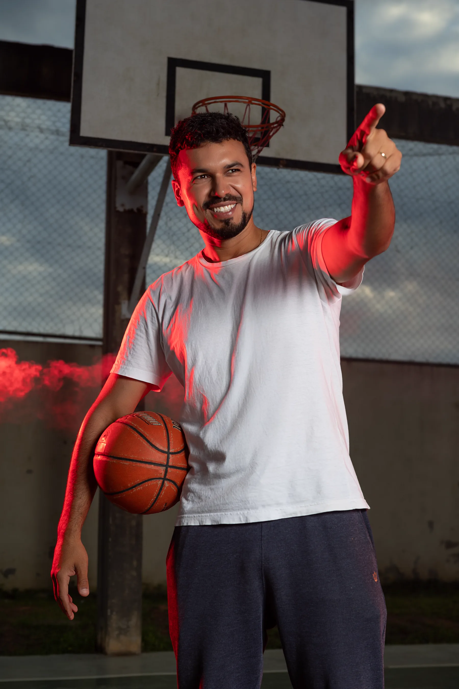
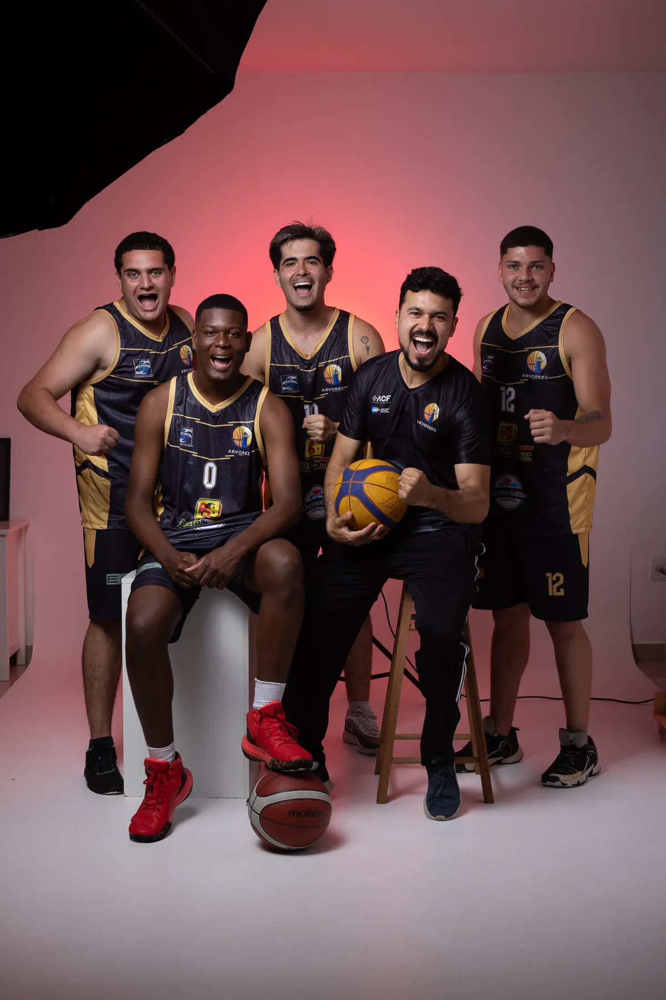
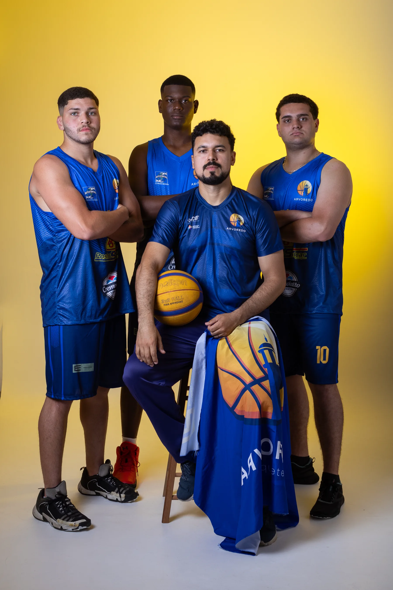
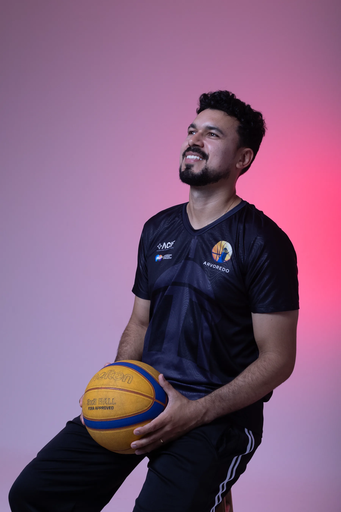
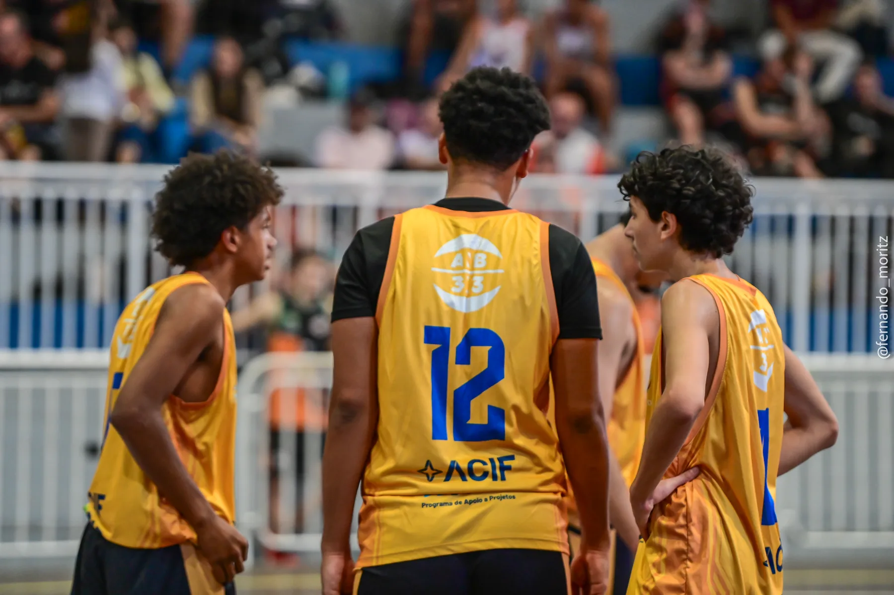
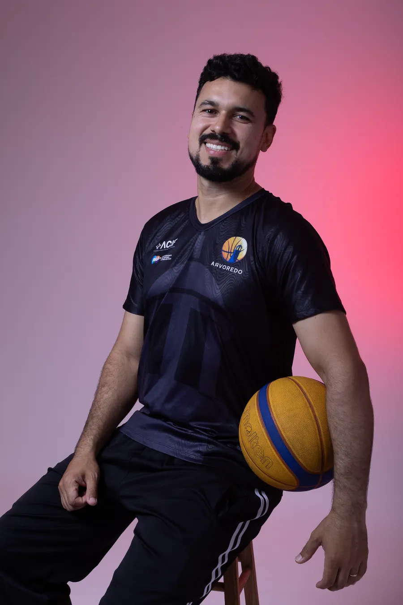
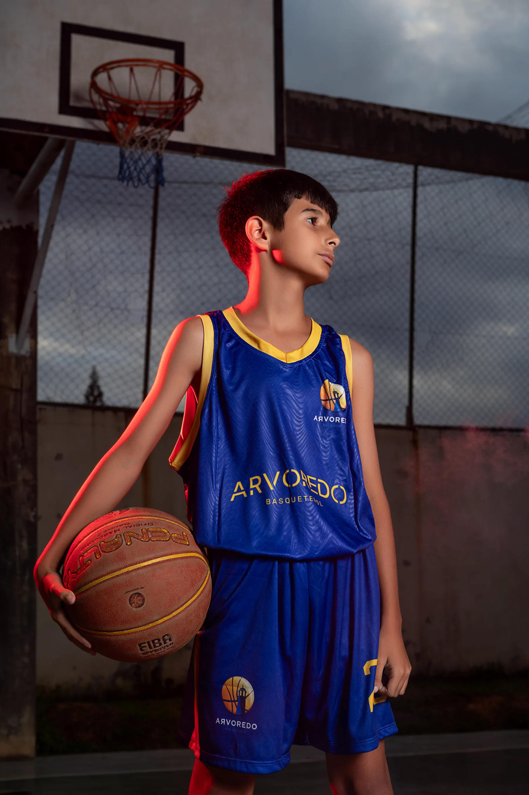
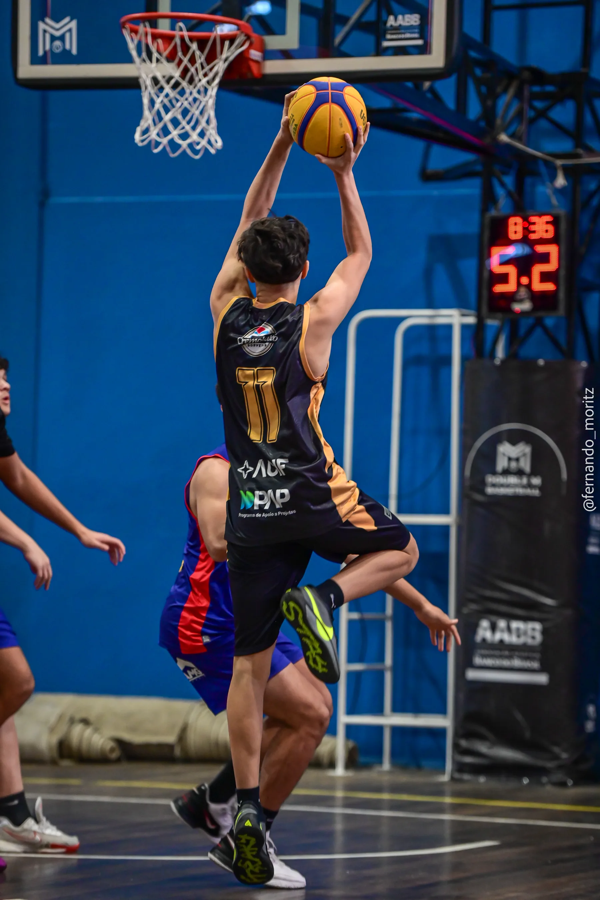
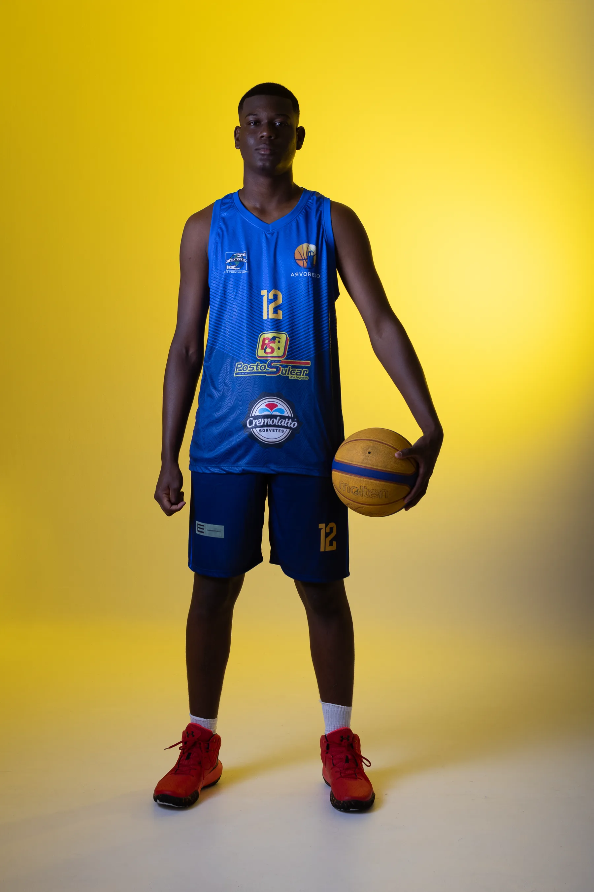

Bola
300 reais/mês ou 250 reais/mês no plano anual (12 meses)- Logo no site e no Instagram do projeto
- Menção nos posts de resultados
- Relatório semestral de impacto
Somos o Instituto Arvoredo Basquetebol, no bairro dos Ingleses, em Florianópolis. Mais de 100 crianças e adolescentes treinam com a gente toda semana — um projeto sustentado por escolas parceiras, empresários e editais de incentivo.

O Arvoredo nasceu nas quadras dos Ingleses para dar estrutura séria de treino a quem tem talento e vontade — mas nem sempre teve oportunidade. Hoje trabalhamos iniciação, especialização e rendimento, com equipes masculinas e femininas competindo em campeonatos estaduais.
Acreditamos que o esporte é uma grande jornada na busca da evolução: cada criança tem um objetivo pessoal que, com orientação adequada e esforço, pode ser alcançado.
"Todos têm objetivos pessoais que, com orientação adequada e o esforço devido, podem ser alcançados."
— Prof. Nathaniell Paulo da Silva, idealizador

Reconhecimento aprovado por unanimidade no plenário da ALESC, por proposição do deputado Rodrigo Minotto, pelo trabalho com jovens atletas dos Ingleses.
O IAB foi declarado de utilidade pública pela Câmara Municipal de Florianópolis, por meio da Lei Ordinária nº 11.379/2025, de autoria do vereador Renato Geske.
Selecionados entre dezenas de projetos de Florianópolis, na categoria Saúde — recurso da iniciativa privada catarinense investido diretamente nos treinos e atletas.
O Instituto Arvoredo de Basquetebol (IAB) foi oficialmente declarado de utilidade pública pelo Estado de Santa Catarina, por meio da Lei Ordinária nº 19.988/2026.
O Arvoredo é um projeto para toda a comunidade. Nos mantemos com apoio de escolas, empresários e editais de incentivo — todos unidos pelo objetivo de transformar vidas através do esporte.








Patrocinar o Arvoredo é investir em mais de 100 famílias dos Ingleses — com contrapartidas reais de visibilidade e um selo de responsabilidade social que já passou pelo crivo da ALESC e da ACIF.
Valores e contrapartidas personalizadas são combinadas diretamente com a coordenação do projeto.
Escaneie o QR Code ou copie a chave Pix. Qualquer valor ajuda a pagar materiais, viagens para campeonatos e uniformes.
Chave Pix (CNPJ) do Instituto Arvoredo. Prefere falar com a gente? Chame no WhatsApp.